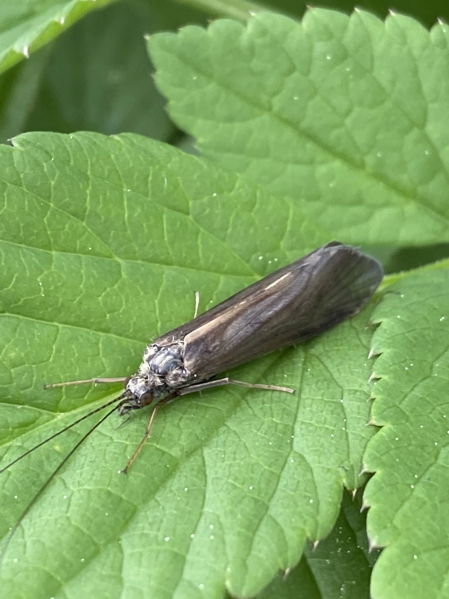

昆虫 · 动物界
纹石蛾 Hydropsyche angustipennis

溪流中常见的石蛾，幼虫会吐丝结网在石缝间滤食水中的有机颗粒，成虫停歇时双翅平展，外形像小蛾。
- 分类
- 门节肢动物门纲昆虫纲目毛翅目科纹石蛾科属纹石蛾属
- 栖息环境
- 溪流与河流的流动水域，幼虫在水底石块和水草间结网
- 地理分布
- 欧亚大陆的淡水溪流与河流，中国多地有分布
- 保护级别
- 暂无评估
物种志
纹石蛾成虫体长 0.8–1.5 cm，体形像小型蛾类。它的体色为褐灰色，翅面有斑纹、密布细毛，停歇时双翅平展铺在背上；触角细长，复眼大，足上有刺；没有像蝴蝶那样卷曲的口器。
纹石蛾分布于欧亚大陆的溪流和河流，幼虫生活在流动的水中，是清洁溪流中常见的底栖动物。它会吐丝在石缝和水草间结网，用网滤食水中的藻类、有机碎屑和细小水生动物，也会在石块上筑巢居住。幼虫经多次蜕皮后在水下化蛹，羽化为成虫，成虫在空中飞舞求偶，夜间有趋光性，常停歇在水边植物上。纹石蛾对水污染较敏感，其群落组成的变化可用于评价河流水质，是重要的水质指示昆虫。
形态与习性
- 食性幼虫滤食藻类、有机碎屑与细小水生动物
- 体长成虫 0.8–1.5 cm
- 幼虫吐丝结网滤食，生活在水底石块间
- 生活史幼虫水生，经蜕皮化蛹后羽化
- 活动节律成虫夜间有趋光性
- 指示作用对水污染敏感，可用于评价河流水质
趣味知识
- 纹石蛾幼虫会吐丝结网，像漏斗一样滤食水中的颗粒。
- 它的成虫外形像小蛾，停歇时双翅平展铺在背上。
- 纹石蛾幼虫生活在流动的水中，是清洁溪流的常见生物。
- 晚上它会被灯光吸引，常停歇在水边植物上。